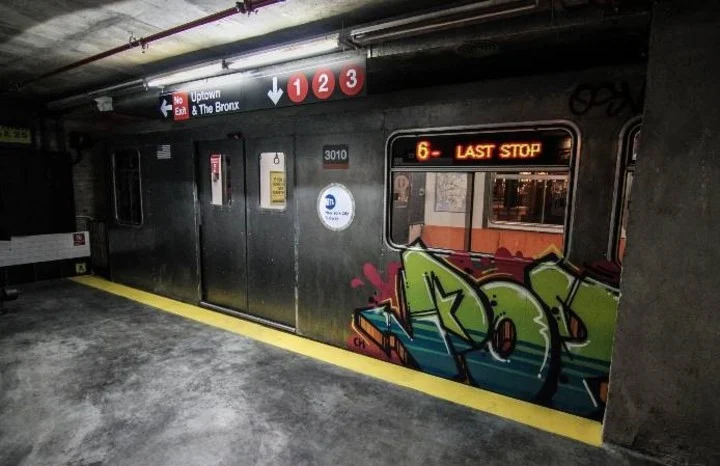
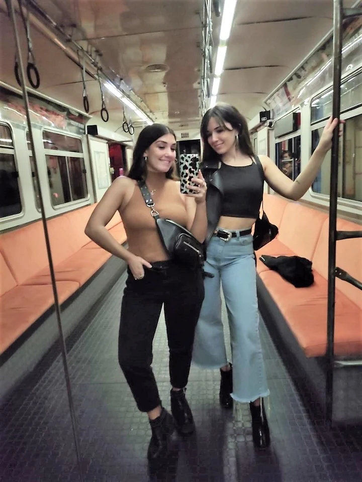

Uptown Bar

Desde su inauguración en 2017, es el bar escenográfico por excelencia. Miles de personas ya bajaron sus escaleras con paredes grafiteadas, atravesaron sus molinetes y se hicieron la foto obligada en la estación y en el vagón de subte que funciona como preámbulo a su barra. El Manson Jar, que es una jarra de Absolut, frutilla y soda de pepino es uno de los tragos más populares. La carta fue creada por el chef Dante Liporace.

A pesar de que es uno de los pioneros en este concepto de bares, muchos instagramers todavía no tienen su foto allí y se ven obligados a reservar hasta con una semana de anticipación para cumplir con el sueño de la selfie subterránea. Arévalo 2030, Palermo. Abierto de martes a sábados, de 18 a 23 hs. Instagram: @uptown.ba